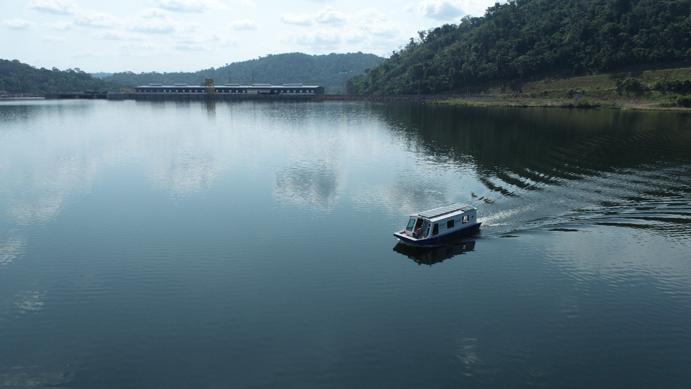

Projeto de P&D · Geração
Barco Elétrico
Acompanhe o registro visual do projeto. Esta página começa com uma foto e poderá receber novos materiais quando forem selecionados para publicação.
Projeto em destaque
Navegação em imagens
Este espaço apresenta a foto compartilhada para divulgação do projeto de Barco Elétrico. A página poderá ser ampliada com novos materiais e informações quando estiverem disponíveis.
